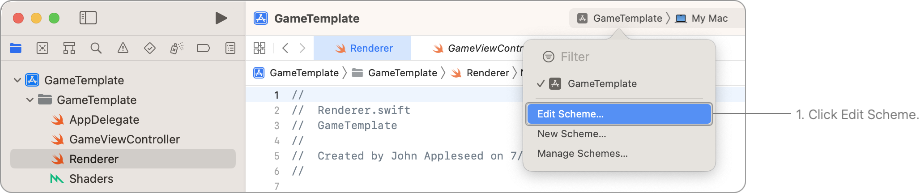
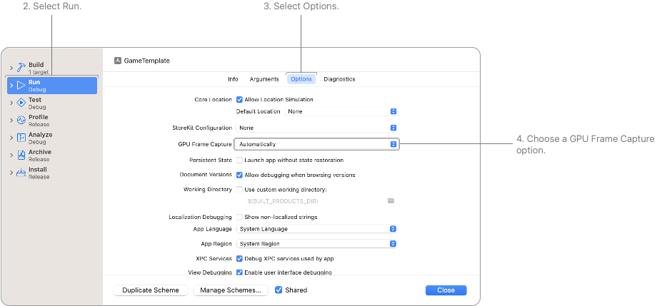
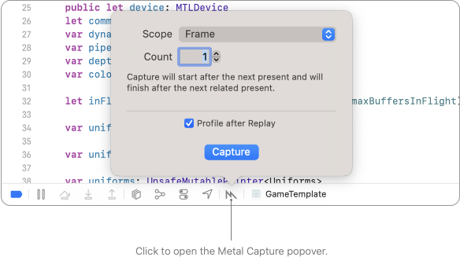
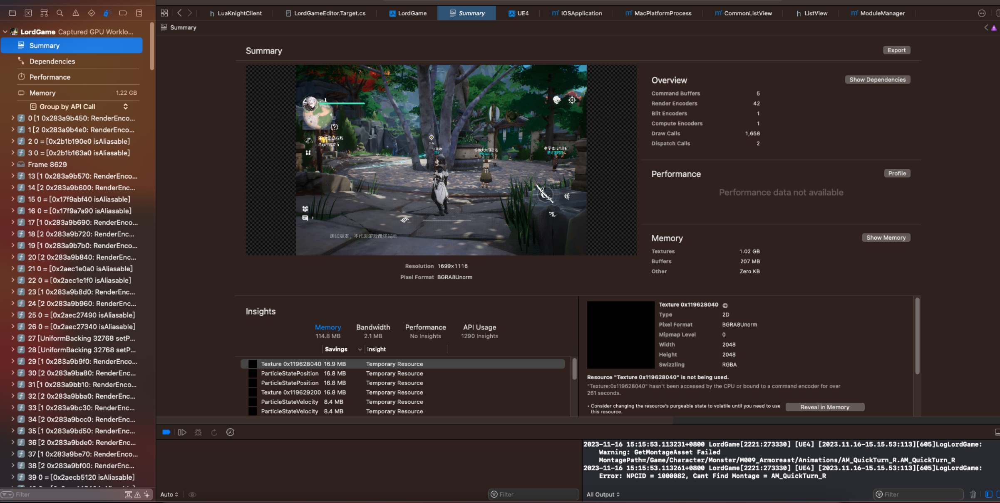
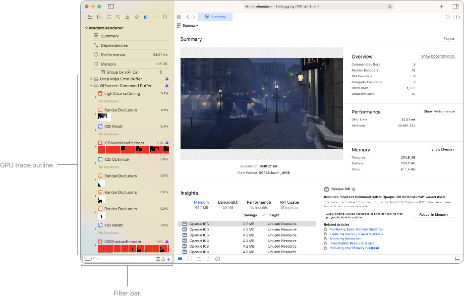
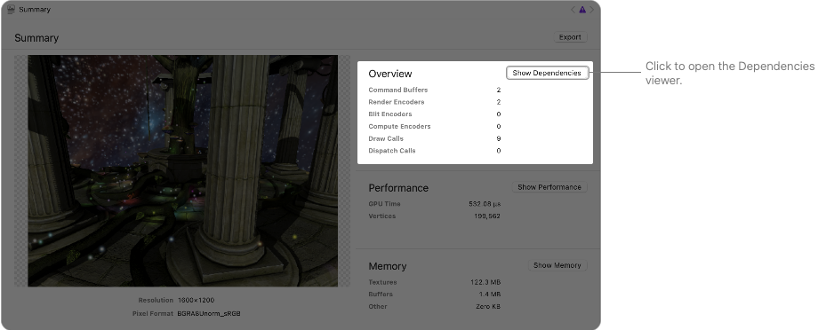
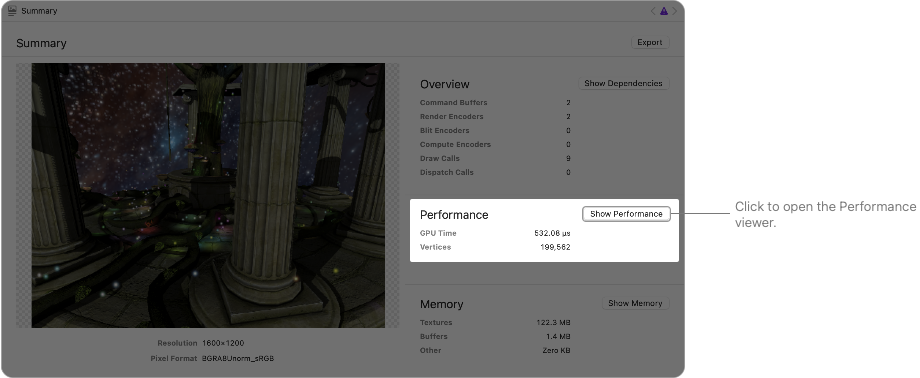
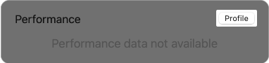
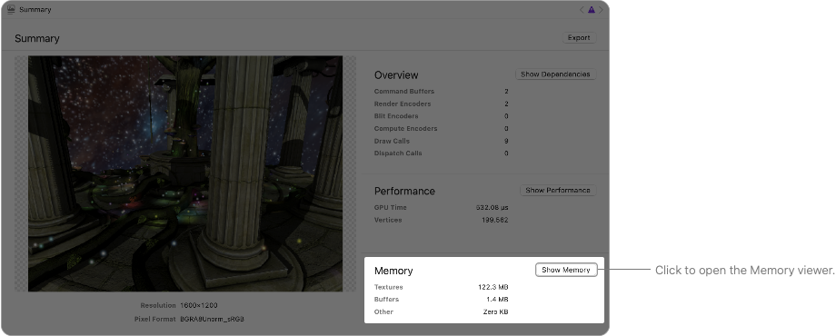
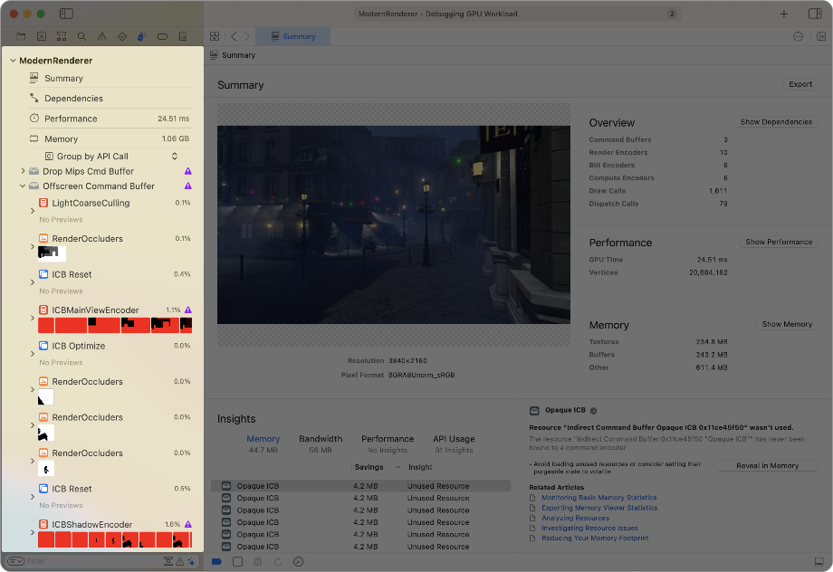

本文主要内容来源于Mac官方文档，基于xcode中的capture gpu workload功能ios设备上的渲染性能分析，并总结相关使用经验和关键的性能调优方法。
版本 | 时间 | 描述 | v0.1 | 2023.11.16 | 初始方案文档
摘要
本文主要内容来源于Mac官方文档，基于xcode中的capture gpu workload功能ios设备上的渲染性能分析，并总结相关使用经验和关键的性能调优方法。
关键字
xcode， capture gpu workload
[1] 工具简介Metal调试器包含一套用于调试和性能分析Metal应用程序的工具。与在运行时在断点处暂停不同，你可以捕获Metal工作负载(Metal Workload)的多个帧，然后在时间轴上前后跳跃，以探索捕获的工作。Metal调试器使你能够探索通道(Pass)之间的依赖关系，并提供改进应用程序性能的见解。你还可以调试绘制命令和计算调度中的着色器，以修复视觉bug的来源。此外，Metal调试器在性能时间轴上显示你的Metal工作负载，并提供详细的统计数据，如性能计数器和每行着色器分析数据。这些工具可以帮助你识别和消除应用程序中的性能瓶颈（请参阅优化GPU性能）。Metal调试器是ios性能调优的不二之选。
目前的主要功能有：
Summary：会总结各个方面的大概情况，包括OverView（Metal层各个Comand和DrawCall相关指标），Performance，Memory，以及可能的Insights
Dependencies：总结各个pass的绘制过程，及依赖顺序。能完整的反应所有的渲染过程
Performance：分析各帧各个方面的开销，比如ALU， BandWidth，Opacity
Memory：分析显存使用的情况，及可能存在的显存空间浪费
[2] capture捕获阶段首先，确保在运行时诊断选项中启用了GPU帧捕获选项。然后，在应用程序运行时，点击调试栏中的Metal捕获按钮，选择一个范围，然后点击捕获
配置GPU Frame Capture选项
Xcode会在你的目标链接到Metal框架或使用Metal API的任何其他框架时，自动启用GPU帧捕获选项。如果你在协作项目中，有可能其他人已经禁用了GPU帧捕获。为确保它已启用，请按照以下步骤进行：
在Xcode 工具栏, 从“Scheme”菜单中选择 Edit Scheme from.

图 1：在Xcode 工具栏, 从“Scheme”菜单中选择 Edit Sc…
左侧选择 “Run ”，然后右侧点击“Options”.
选择一个 GPU Frame Capture option 然后点击 Close.

图 2：选择一个 GPU Frame Capture option 然后点击…
GPU帧捕获选项包括以下内容：
自动 捕获你的应用程序中Metal或OpenGL ES API的使用情况。如果你的目标未链接到Metal框架或OpenGL ES框架，调试栏中将不会出现Metal捕获按钮。如果你的应用程序同时使用Metal API和OpenGL ES API，你可以点击并按住捕获GPU帧图标，选择要捕获的API使用情况。
Metal 仅捕获你的应用程序中Metal API的使用情况。如果你的应用程序不使用Metal API，Xcode将在调试栏中禁用Metal捕获按钮。
禁用 不捕获应用程序中Metal的使用情况。GPU帧捕获对应用程序的CPU处理时间有微小但可测量的影响，因此在想要测试应用程序的最大性能水平时，请选择此选项。
捕获Workload
当调试app的时候可以通过以下几步捕获GPU trace：
点击调试条上面的Capture GPU Workload功能.

图 3：点击调试条上面的Capture GPU Workload功能.
选择你要捕获的范围。这可以是帧（frame）、Metal层、命令队列、设备，或者你之前设置过的任何自定义范围。
选择捕获范围。根据范围的不同，这可能包括帧数或命令缓冲区的数量。
可以选择在重放后进行性能分析，以便Xcode在捕获后自动进行性能分析。性能分析对Metal调试器有初始的性能影响，因此只在调试应用程序性能时启用此选项。你随时可以根据需要稍后进行性能分析。
点击“捕获”按钮。Xcode会在触发范围时自动开始捕获GPU跟踪，并根据你选择的范围结束捕获。你也可以随时点击“完成”按钮手动停止捕获
如下图，捕获后，会自动跳转到Summary，

图 4：如下图，捕获后，会自动跳转到Summary，
[3] 通过Summary分析Mesh WorkloadMetal调试器提供了有用的工具，用于分析你的应用程序如何使用GPU的多个方面。
在捕获Metal Workload（参见Xcode中的捕获Metal工作负载）或回放GPU trace文件（参见回放GPU跟踪文件）后，Metal调试器将呈现Summary。摘要查看器在左侧包括你的应用程序中上一个呈现的可绘制对象的预览，在右侧有一些统计数据，并在底部列出了自动生成的建议，称为洞察（Insights）。
在摘要查看器的左侧是调试导航器，它可以快速访问关于你的Metal工作负载的顶级信息。你可以探索捕获中的所有GPU命令，以及它使用的所有管道状态

图 5：在摘要查看器的左侧是调试导航器，它可以快速访问关于你的Metal工作…
查看Metal Workload的统计信息
Metal调试器会自动计算多项统计数据并将其显示在摘要查看器的右侧。
概览部分包括Command Buffer、Render Encoders，Blit Encoders， Compute Encoders， DrawCallsDispatch Calls数量。编码命令需要CPU时间，而执行命令则需要GPU时间。如果你的应用程序创建了过多的命令缓冲区或命令编码器，开始对性能产生显著影响，考虑减少工作负载。你可以点击“ShowDependencies”按钮打开依赖性查看器，了解命令编码器之间的连接方式。

图 6：概览部分包括Command Buffer、Render Encode…
Performance部分包括总GPU时间和顶点数量。如果你的工作负载具有较高的GPU时间。你还可以点击“显示性能”按钮以显示性能时间轴，并发现你的Metal工作负载中哪些方面花费了最多的时间（参见使用可视时间轴分析Apple GPU性能）。

图 7：Performance部分包括总GPU时间和顶点数量。如果你的工作负…
提示：
如果你在Metal捕获弹出窗口（参见在Xcode中捕获Metal工作负载）中没有选择“重放后进行性能分析”复选框，或者在重放窗口（参见回放GPU跟踪文件）中没有选择“性能分析GPU跟踪”复选框，性能部分将不显示任何统计信息。要查看统计信息，请点击“性能分析”按钮并等待性能分析完成

图 8：如果你在Metal捕获弹出窗口（参见在Xcode中捕获Metal工作…
内存部分包括对各种资源类型（如纹理和缓冲区）的GPU内存的简要概述。如果你的Metal工作负载使用了大量内存，请考虑优化内存使用。你还可以点击“显示内存”按钮打开内存查看器，并发现你的Metal工作负载中哪些方面使用了最多的内存。

图 9：内存部分包括对各种资源类型（如纹理和缓冲区）的GPU内存的简要概述。…
浏览 API 调用
默认情况下，Metal调试器在调试导航器中显示捕获的Metal命令的大纲，按照命令缓冲区、通道和调试组进行分组。此外，对于渲染通道，大纲还包括渲染附件缩略图图像的列表。

图 10：默认情况下，Metal调试器在调试导航器中显示捕获的Metal命令的…
渲染通道通常会发出大量的绘制命令。你可以通过将指针移动到行上，快速定位感兴趣的绘制命令。Metal调试器在弹出窗口中显示了第一个attachment的预览。
图 11：渲染通道通常会发出大量的绘制命令。你可以通过将指针移动到行上，快速定…
浏览pipeline states
与查看Metal命令的层次结构不同，你可以从管道状态开始探索捕获的Metal工作负载。点击Outline弹出菜单，然后选择按照管道状态进行分组
图 12：与查看Metal命令的层次结构不同，你可以从管道状态开始探索捕获的M…
Metal调试器显示了一系列管道状态（PipelineState）。展开一个管道状态可以看到它的着色器。进一步展开显示使用该管道状态的所有绘制命令和计算调度。
在性能分析数据中，调试导航器显示了在有重叠运行负载时来自每个管道状态着色器的样本百分比。在Shader Bound的负载中，这个排序的管道状态列表有助于识别最昂贵的管道状态
使用Insights改进Metal的Workload
Metal调试器会自动生成一些建议，称为Insights，并将它们包含在Summary查看器底部，以帮助你改进Metal工作负载。Insights信息包括以下类别：
内存内存建议提供了减少工作负载使用的GPU内存量的建议。默认情况下，Xcode按照节省的内存量对建议进行排序，因此你可以首先关注潜在的最大收益。在以下示例中，设置错误的存储模式导致额外使用了10.2 MB的GPU内存。该应用程序的开发者可以通过遵循建议并切换到无内存模式来节省该内存
图 13：内存内存建议提供了减少工作负载使用的GPU内存量的建议。默认情况下，…
带宽
带宽建议提供了减少内存带宽使用的建议，这在Apple GPU上尤其重要。与外部内存的传输通常导致功耗效率降低和性能变慢。要了解更多信息，请参阅《Tailor Your Apps for Apple GPUs》和《Tile-Based Deferred Rendering》。
性能
性能建议提供了通过避免渲染管线中昂贵和冗余操作来提高应用程序性能的建议
API Usage
API使用建议提供了改进Metal API使用的建议。更少的API调用可以导致更少的CPU时间。在以下示例中，你可以看到每个绘制命令都会冗余地绑定顶点和片段缓冲区
图 14：API使用建议提供了改进Metal API使用的建议。更少的API调…
点击调试导航器中命令旁边的Insights按钮，以查看详细的信息和可能改进命令的建议
图 15：点击调试导航器中命令旁边的Insights按钮，以查看详细的信息和可…
使用Filters控制范围
使用调试导航器底部的过滤条来调整过滤标准。你可以在过滤条的文本字段中输入过滤条件，调试导航器中的大纲将只显示与这些过滤条件匹配的标签的行。
当存在两个或更多过滤条件时，你可以点击过滤按钮选择是匹配任何还是所有条件。对于任何过滤条件，你可以点击它以选择包括或排除与该条件匹配的资源。
右侧还显示了以下额外的过滤工具：
仅显示相关的堆栈帧在捕获新的GPU Trace后，你可以检查每个Metal命令的调用堆栈。这允许在你的项目中筛选堆栈帧。
仅显示存在问题的调用这允许仅筛选来自Metal调试器的洞察的Metal命令。
仅显示标记和命令这允许仅筛选像绘制命令、计算调度和位块操作等Metal命令
[4] 分析Resource和Pass的DependencyThe Dependencies viewer提供了GPU跟踪结构的图形表示，并允许你查看资源与访问它们的编码器之间的关系。它还突出显示你在编码器之间使用的手动同步，并通过显示帧中所有未使用的资源来指示任何不必要的工作
图 16：The Dependencies viewer提供了GPU跟踪结构的…
按照不同的的Detail等级查看Graph
在最高级别，依赖性查看器（Dependency Viewer）显示了帧的整体结构。在这个级别，你可以看到命令缓冲区内的命令编码器的图形。你还可以看到帧中的所有pass。每个pass包括其工作的缩略图预览，以及它消耗或产生的资源数量。在这个级别，你可以看到数据是否流动以及通道之间是否有同步
图 17：在最高级别，依赖性查看器（Dependency Viewer）显示了…
当你放大到下一个级别时，依赖性查看器（Dependency Viewer）展开了每个通道的资源。此外，每个资源上下可以有指示消耗和产生操作的图标。对于渲染通道中的附件，图标指的是加载和存储操作。否则，它们指的是一般的资源读写操作。在这个级别，你还可以查看哪些资源引入了通道之间的数据流或同步
图 18：当你放大到下一个级别时，依赖性查看器（Dependency View…
随着进一步放大，依赖性查看器（Dependency Viewer）显示了资源的更大缩略图和元数据
图 19：随着进一步放大，依赖性查看器（Dependency Viewer）显…
查看资源的消耗和产生
资源上方和下方的consuming and producing actions帮助你在快速浏览时了解给定通道中的资源访问。对于渲染通道中的Texture，这些操作指的是每个Attachment的加载和存储操作。对于多采样渲染通道，存储操作可能会影响多采样和解析纹理的存储。使用 MTLStoreAction.storeAndMultisampleResolve, the multisample texture shows a store action and the resolve texture shows a store action. With MTLStoreAction.multisampleResolve, the multisample texture shows a don’t-care action and the resolve texture shows a store action否则，依赖性查看器使用通用的读写操作注释这些操作
分析数据流，pass间的同步依赖关系
依赖性查看器显示pass之间的两类依赖关系：
实线表示数据流。先前的通道生成了数据，后续的通道消耗它。
虚线表示同步。没有数据流，但两个通道之间存在关系。例如，一个计算通道从先前的渲染编码器写入的纹理中读取，这两个通道之间存在数据流。此外，一个在加载时清除Attachment的渲染pass与先前修改过纹理的任何pass都没有数据依赖性。然而，该渲染通道需要等到先前的pass完成对纹理的修改，这是一种同步。
选择一个分析Dependencies的模式
你可以使用依赖性查看器选择不同的可视化模式，每个模式具有不同的边子集：
All（全部）：显示来自同步原语、被跟踪和未被跟踪资源的所有边。
Synchronization（同步）：显示来自同步原语和被跟踪资源的虚线同步边。
Data Flow（数据流）：显示来自被跟踪或未被跟踪资源的实线数据流边
Pin 和UnPin Resource堆
为了保持一个紧凑的图形，依赖性查看器尝试保持图上可见的一些有趣的资源，并将其余资源隐藏在每个通道下面的一堆中。点击这堆会打开一个资源的弹出窗口
图 20：为了保持一个紧凑的图形，依赖性查看器尝试保持图上可见的一些有趣的资源…
可以点击右侧的Pin Resource 按钮，来Pin和Unpin
获取一个Pass的更多信息
点击依赖性查看器中的任何通道会选择它并在侧边栏中显示有关该通道的附加信息。你还可以确定通道消耗或生成的资源：
对于通道消耗的资源，依赖性查看器建议最近修改该资源的通道。
对于通道生成的资源，依赖性查看器建议稍后消耗该资源中的数据的通道
获取一个resource的更多信息
点击依赖性查看器中的任何资源会选择它并在侧边栏中显示有关该资源的附加信息。你还可以查看最后生成或稍后消耗资源中数据的通道。当你选择一个资源时，依赖性查看器会突出显示任何相关的资源。例如，当你选择一个纹理视图时，它会突出显示父纹理。当你选择一个堆时，它会突出显示来自该堆的资源。
使用Insights改进Metal Workload
点击依赖性查看器右下角的Insights按钮，以打开一个包含建议的弹出窗口
图 21：点击依赖性查看器右下角的Insights按钮，以打开一个包含建议的弹…
使用Filters控制显示范围
使用依赖性查看器底部的过滤字段来调整图形的过滤标准。在字段中输入过滤条件，依赖性查看器会显示与过滤条件匹配的任何相关通道。此外，当通过资源进行过滤时，你可以找到消耗或生成该资源的通道
查找特定的Element
Dependencies viewer的上面，选择 Find > Find to display .
你可以在搜索栏的文本字段中输入搜索词来查找匹配的通道和资源。对于任何搜索词，你可以点击它并选择包括或排除与该词匹配的元素。文本字段右侧的两个箭头按钮允许你移动到依赖性查看器中的前一个或下一个匹配元素
[5] 分析内存使用内存查看器提供了关于你的Metal应用程序内存使用的详细信息。内存查看器的顶部部分显示了内存按类别的细分，底部部分显示了资源的表格。在表格中，你可以查看资源的内存大小、配置和其他特征
图 22：内存查看器提供了关于你的Metal应用程序内存使用的详细信息。内存查…
Metal应用程序创建许多资源，而这些资源占用大量内存。例如，为了使用基于物理的渲染器渲染一个动画角色，你可能需要缓冲区来保存顶点和动画数据，以及多个纹理来提供材质属性。当你将这些要求扩展到多个角色和更大的场景时，你的应用程序的内存占用显著增加。
此外，当你创建Metal资源时，精确指定它们的配置对性能有很大影响。Metal调试器分析你提供的配置，并使用它来创建资源的底层GPU表示。例如，如果你使用私有存储模式创建资源，Metal可以优化该资源以便GPU访问，而不需要在CPU直接可访问的位置或格式中存储数据
了解Memory下的Bar图
内存查看器顶部部分的分类根据以下标准组织内存使用数据，并提供基于以下几个方面的内存总计：
Volatility（易变的）
此类别列出了volatile 和 nonvolatile资源。非不稳定内存总量是你的Metal应用程序的跟踪内存使用的良好指标。当你将资源标记volatile 时，你允许Metal在内存不足时处理其内容。操作系统不会在你的应用程序总内存占用中计算Volatile内存。例如，在iOS中，较低的内存占用减少了超出jetsam限制并导致操作系统终止应用程序的风险。如果你认为将来可能会使用当前未使用的资源，请将其标记为nonvolatile，而不是简单地释放它。这样，只有在Metal丢弃资源内容时才需要重新创建资源的内容。有关更多信息，请参阅。 setPurgeableState(_:).
Type
这些资产分类，以类型分列 — textures纹理, buffers, 其他。 检查各个分类以确定你的应用程序在某些分类上是否比其他资源更多地使用了资源
Storage mode
这个类别展示存储Mode， MTLStorageMode. 需要检查是不是大量的Resource被标记为MTLStorageMode.shared 或者 MTLStorageMode.managed.
Use
此类别跟踪在捕获的帧中命令是否访问了资源。检查此类别以查看未使用资源的大量总数，这可能表明你需要释放一些资源或将其标记为Volatile。
每个条形图由代表其跟踪的最大资源的段组成。每个条形图的最后一个段显示其较小资源的汇总总数。将鼠标指针悬停在一个段上，以查看一个包含资源名称、大小和其他信息的弹出窗口。单击一个段以获取有关该特定资源的更多信息
图 23：每个条形图由代表其跟踪的最大资源的段组成。每个条形图的最后一个段显示…
查看Resource表
要改进应用程序如何创建和管理资源，你需要了解一些数据的作用，以便指导怎么使用。内存查看器提供了在捕获期间在你的Metal应用程序中存活的资源的信息
图 24：要改进应用程序如何创建和管理资源，你需要了解一些数据的作用，以便指导…
资源表为所有资源类型提供以下信息
提示：完整表格见上方截图，可点击查看。
For textures, you can add the following columns:
提示：完整表格见上方截图，可点击查看。
For buffers, you can add the following column:
提示：完整表格见上方截图，可点击查看。
For heaps, you can add the following columns:
提示：完整表格见上方截图，可点击查看。
For indirect command buffers, you can add the following column:
提示：完整表格见上方截图，可点击查看。
For acceleration structures, you can add the following column:
提示：完整表格见上方截图，可点击查看。
使用Insights改进Metal Workload
点击右下角的Insights按钮以打开一个包含资源建议的弹出窗口
图 25：点击右下角的Insights按钮以打开一个包含资源建议的弹出窗口
使用Filters控制显示范围
使用内存查看器底部的过滤字段来调整过滤标准。在字段中输入过滤条件，资源表会显示任何具有与这些过滤条件匹配的标签的资源。你还可以点击过滤按钮，为特定类型的资源添加过滤器，将表限制为捕获帧使用的资源，并将表限制为只有不稳定资源。当存在两个或更多过滤条件时，你可以点击过滤按钮选择是匹配任何还是所有条件。对于任何过滤条件，你可以点击它以选择包括或排除与该条件匹配的资源
对Resources进行分组和排序以便发现某些问题模式
默认情况下，资源表以单一列表显示所有资源。你可以点击列标题以按该列升序或降序排序表。你还可以根据某些标准对资源进行分组。
在表中Control-click一个条目，可以按以下任何标准对资源进行分组：
None（无）恢复到默认行为，即显示表中所有资源而不对它们进行分组。
Type（类型）将资源分组为缓冲区、纹理、堆或间接命令缓冲区。
Allocated Size（分配大小）根据资源的实际大小对资源进行分组。分组基于对数刻度。使用此标准查找应用程序中最大的资源。
Storage Mode（存储模式）根据创建每个资源时选择的存储模式对资源进行分组。
Command Buffer（命令缓冲区）根据引用它们的命令缓冲区对资源进行分组。使用此标准可以确定哪些命令引用哪些资源。
Command Encoder（命令编码器）根据使用特定命令编码器的命令对资源进行分组。使用此标准可以了解特定计算和渲染通道的行为。从同一上下文菜单中，你还可以选择按特定标准进行排序，这相当于点击列标题进行排序。
[6] Optimizing GPU performance苹果GPU在可能的情况下并行运行 vertex, fragment, 和 compute 计算任务。Metal调试器提供了检查重叠运行的通道的方法，你可以使用它来查找GPU负载工作中的瓶颈任务。此外，分析器通过对你的着色器进行采样来测量性能统计信息，以显示热点。
如果在运行应用程序时注意到任何性能问题，可以使用Metal调试器找到并调查瓶颈。首先，配置你的构建以包含着色器源代码（ Building your project with embedded shader sources）。然后，在注意到要调试的问题时，捕获你的应用程序的一帧
搜集性能数据
启用“Profile after Replay ”选项后，Metal调试器会在重播工作负载后自动开始收集性能数据。或者，你可以点击摘要查看器上的“配置文件”按钮来收集性能数据。
图 26：启用“Profile after Replay ”选项后，Metal…
在进行性能分析时，GPU的性能状态很重要，因为它影响系统执行工作负载的速度。影响性能状态的因素包括热量和系统设置。
默认情况下，Metal调试器在捕获时以相同的GPU性能状态分析工作负载，因此性能通常与你在设备上观察到的类似。然而，你可以通过在调试栏中点击GPU Profiler按钮，在Metal调试器中制定特定的GPU性能状态来进行性能分析
For more information on GPU performance state, see Discover Metal debugging, profiling, and asset creation tools.
图 27：For more information on GPU perfor…
你可以通过在调试栏中点击GPU Profiler按钮来在不同的GPU执行模式之间切换，包括并发和串行。默认情况下，Metal调试器在并发模式下分析工作负载。这允许GPU重叠顶点、片元和计算任务，以便尽快完成。在串行模式下，Metal调试器强制每个通道只能在前一个通道完成后运行，这增加了每个通道的数据报告的精度，但不代表运行时性能
使用Performance Timeline发现性能瓶颈
Metal调试器中的性能时间轴（Performance timeline）可以帮助你在捕获的工作负载中找到昂贵的任务和性能瓶颈。通过在调试导航器中点击性能按钮来打开性能时间轴（Performance timeline）
图 28：Metal调试器中的性能时间轴（Performance timeli…
窗口左侧的时间轴导航器列出了所有已分析的通道、管线状态和GPU命令及其着色器时间成本。顶部部分有 Vertex, Fragment, 和 Compute GPU轨道，显示了具有重叠运行的单个通道的开始时间和持续时间。在GPU轨道下方是合并的着色器轨道，它们结合了单个着色器的信息。你可以通过展开合并的着色器轨道以瀑布式的方式查看单个着色器的时间轴。底部部分有一个单独的计数器时间轴，其中包括GPU计数器，如占用率、限制器和带宽。这些计数器可以帮助你诊断性能瓶颈。你可以通过在不同的计数器选项卡之间切换来专注于计数器子集。有关更多信息，see Analyzing Apple GPU performance using a visual timeline.
获取Pass和Draw的详细性能指标
你可以在GPU跟踪中查看应用程序通道（pass）或命令（Commands）的性能计数器统计信息。通过点击性能Performance timeline上方的Counters 标签页来打开性能计数器。
图 29：你可以在GPU跟踪中查看应用程序通道（pass）或命令（Comman…
Metal调试器通过在具有重叠运行的工作负载中采样着色器来得出着色器分析器时间。在Shader Bound的工作负载中，按照着色器分析器时间对表进行排序可以指示整体上最耗时的通道（pass）或绘图（Draw）。此外，Metal调试器从每个通道或命令中独立测量详细的计数器。你还可以在顶部栏中选择不同的计数器集，以获得更集中的视图 For more information, see Analyzing Apple GPU performance using counter statistics.
在Debug导航器中为Command使用Pipeline States分组
为了以不同的视角查看Metal命令，点击调试导航器中的outline弹出菜单，然后选择“按管线状态分组”以查看管线状态的列表
图 30：为了以不同的视角查看Metal命令，点击调试导航器中的outline…
在进行性能分析时，调试导航器显示在具有重叠运行的工作负载中从每个管线状态的着色器中采样的样本百分比。在shader bound的工作负载中，这个排序的管线状态列表有助于识别最昂贵的管线状态。展开一个管线状态可以找到使用该状态的命令列表。
你还可以通过从列表中选择一个管线状态中的着色器来快速查看着色器源代码和每行的分析统计数据
For more information on the Debug navigator, see Analyzing your Metal workload.
使用逐行的Shader Profiling数据进行shader优化
在打开着色器后，你可以查找该管线状态中着色器的时间分解情况
图 31：在打开着色器后，你可以查找该管线状态中着色器的时间分解情况
左侧边栏允许你查看着色器源文件和性能分析调用树。通过调用树，你可以通过每个帧的权重找到性能热点。
在着色器源代码的装订线上，你可以找到代码行旁边的权重。每个权重旁边的饼图包含性能统计信息，帮助你改进着色器代码。
例如，当你观察到一行耗时的代码，其内存采样的百分比很高时，这可能是花费时间读取纹理数据。为了减少着色器时间，如果从计算值比从纹理中读取值更便宜，你可以修改代码以在着色器中计算它。
在对着色器源代码进行更改后，点击调试栏中的“Reload Shaders”按钮以刷新性能分析统计信息。通过观察新的总GPU时间和性能时间轴中的轨迹，你可以验证这些更改是否有助于整体性能。
重要提示
对着色器源代码的更改仅存在于Metal调试器中。你的原始着色器源代码不会更改。确保将更改复制到你的原始着色器源代码中
For more information on interpreting the per-line shader profiling statistics, see Inspecting shaders.
[7] 使用可视的Timeline分析Apple GPU的性能顶部有 Vertex, Fragment, 和 Compute GPU tracks，显示具有重叠运行的各个通Pass的开始时间和持续时间。在GPU Track下面是汇总的着色器Trace，将各个着色器合并在一起。你可以通过展开汇总的着色器轨道，以瀑布式的方式查看各个着色器的时间轴。
底部部分有一个单独的计数器时间轴，其中包括GPU计数器，如占用率、限制器和带宽。这些计数器可以帮助你诊断性能瓶颈。你可以通过在不同的计数器选项卡之间切换，集中在计数器子集上
Occupancy（GPU占用率）
GPU具有同时执行的最大线程数。占用率是GPU使用这一容量的度量。当GPU有更多线程要分派且有足够的内部资源时，它会创建新的线程。通常情况下，在应用程序有效利用GPU时，占用率较高更好。
Compute occupancy
衡量GPU用于执行计算命令的总线程容量的百分比。
Vertex occupancy
衡量GPU用于执行顶点线程的总线程容量的百分比。
Fragment occupancy
衡量GPU用于执行片段线程的总线程容量的百分比。
这些百分比的总和是GPU容量使用的总百分比。你可以在Instruments和Metal调试器的性能时间轴中获得着色器占用率计数器
分析你的App是否GPU占用率低
当整体占用率测量未接近100%时，你的应用程序可能具有较低的占用率。每个着色器的最大理论占用率取决于它在设备上消耗的内部资源的数量。你可以在性能时间轴中获取每个着色器的这些信息。
高占用率和低占用率都不自动表示存在问题。例如，如果你的fragment shaders占用率高，那么vertex shader低占用率可能是可以接受的。最终，你需要将占用率测量与其他计数器或其他Metal工具的测量相关联，以确定问题。
当整体占用率较低时，可能是以下情况之一：
你的着色器已经耗尽了一些内部资源，比如线程、线程组或图像块内存，阻止了GPU创建更多线程。
你的着色器可能太简单，以至于线程的执行速度比GPU创建新线程的速度更快。
你的应用程序可能在渲染目标的内部小区域进行渲染，或者分发非常小的Compute Grids，以至于GPU耗尽了创建线程的资源。
确定对你的应用程序的影响
如果你发现整体占用率较低，下一步是确定它是否对你的应用程序产生了负面影响。如果对limiter counters的检查还显示较低的值，那么GPU执行的工作量可能非常小。
当整体占用率较高时，GPU正在执行许多线程以隐藏指令延迟。高占用率通常是好的，因为你希望充分利用GPU的潜力。然而，也有可能是你的着色器没有有效地利用GPU。优化它们可以使GPU的容量更多地用于其他GPU命令。
在罕见的情况下，当整体占用率非常高时，GPU可能执行其工作负载较差，因为线程争夺GPU内存缓存的空间（也称为缓存抖动cache thrashing）。在这种情况下，你可能需要减少发送到GPU的工作量或更改其访问（读取或写入）内存的方式。例如，你可以尝试以下操作：
减少内存访问次数。
减少访问内存的量。
在访问内存时更改你使用的时间或空间访问模式。内存读取或写入，limiter counters可能会更详细地说明你的应用程序是否存在问题。
Limiter and utilization
GPU在并行处理许多不同类型的操作，包括算术、内存访问和光栅化。Limiter Counter包括GPU执行工作的时间以及任何子系统中的等待时间（这些等待时间会阻止GPU启动新工作）。utilization Counter包括GPU在没有等待的情况下在子系统中执行工作的时间。
GPU通常可以通过将它们分派到专门处理不同操作的各种子系统来同时运行子任务，例如内存访问、数学和逻辑操作以及像素光栅化。然而，应用程序的GPU函数（着色器函数和计算内核）中的代码可能会强制其中一些子系统停顿，或等待自身完成操作或等待另一个子系统准备就绪。
GPU驱动程序通过计数器发布其子系统的工作时间和停顿时间，你可以监视这些计数器，了解这些子系统在工作和停顿方面花费了多少时间
A utilization counter 这显示了GPU子系统在没有停顿的情况下执行工作的时间。
A limiter counter 这显示了GPU在执行工作时花费的时间，包括停顿时间。
使用以下计数器作为线索，帮助您识别运行时可能成为瓶颈的GPU子系统:
提示：完整表格见上方截图，可点击查看。
为了减轻特定GPU子系统的压力并帮助GPU更快地运行命令，您可以调整GPU函数的操作方式和资源使用方式。大多数代码调整通常属于几种策略，包括以下几种：
减少操作数量
将工作移至另一个工作较少的子系统
降低图像质量或数学精度
以改善GPU内存缓存命中的方式访问内存某些调整存在权衡，例如降低图像质量或数学精度，由您决定哪些调整对您的应用程序更有价值。提示通过尝试应用程序，发现哪些调整能够提供更好的性能。
减少数字逻辑单元的工作负载
算术逻辑单元（ALU）处理您的代码的算术、逻辑和位运算。如果计数器表明ALU可能是瓶颈，您可以尝试以下每种调整并评估任何更改：
用近似值替换公式。
如果半浮点具有足够的范围和精度，可以将浮点值替换为半浮点。
将GPU函数编译为使用-ffast-math Metal编译器标志，该标志启用运行更快的优化，但可能引入精度错误（请参阅《Metal Shading Language Specification》中的第1.5节）。
用查找表或纹理替换复杂的计算。这些调整通过使工作变得更简单或将工作转移到另一个子系统，比如纹理采样器，来减轻ALU的工作负担。例如，您可以通过创建一个噪声纹理并在代码每次需要值时从中采样，来消除噪声计算函数
减少Texture操作的负载
当您将渲染通道的loadAction属性设置为MTLLoadAction.load时，GPU会为每个颜色附件读取纹理数据，每当GPU函数读取、收集或采样纹理时也会发生这种情况。具有较大尺寸或使用较大像素格式的纹理占用更多内存，通常会增加GPU用于采样纹理的数据量。
如果计数器表明纹理采样操作可能是瓶颈，您可以尝试以下调整并评估应用性能的任何更改：
对于应用了缩小滤镜（ minification filter）的任何纹理，从mipmap中采样。
选择双线性过滤而不是三线性过滤。
计算在GPU函数内开销更小的计算值，而不是从纹理中读取。
使用较小的尺寸或使用较小像素格式的纹理。
将单通道纹理的读取或采样替换为更有效地使用GPU的gather操作。
类似地，当您将渲染通道的storeAction属性设置为MTLStoreAction.store时，GPU会为每个颜色附件保存纹理数据，每当GPU函数显式写入纹理时也会发生这种情况。
如果计数器表明纹理写入操作可能是瓶颈，您可以尝试以下调整并评估应用性能的任何更改：
使用较小尺寸或使用较小像素格式的纹理。
减少多采样抗锯齿（MSAA）的采样数量。
渲染更少的非常小的三角形，特别是如果您还应用了MSAA。
修改在空间或时间上聚集写入的纹理，GPU可以将其合并成较少的内存写入事务
减少Buffer操作的负载
写操作计数器（write operation counters）测量 GPU 函数将数据存储到 GPU 设备地址空间中的内存所花费的时间。读操作计数器（read operation counters）测量 GPU 函数从内存中提取数据的时间，包括设备地址空间和常量地址空间。
当 GPU 函数使用大量线程内存或通过动态索引访问线程内存时，它们可能会增加读写活动。当函数需要存储的数据量超过 GPU 寄存器的容量时，GPU 不得不将数据存储到设备内存中，然后在稍后的时间内读取它。
如果计数器表明缓冲区读取或写入操作可能是瓶颈，您可以尝试以下调整并评估应用性能的任何更改：
将数据更紧密地打包到缓冲区中。
使用 SIMD 类型（例如 float4 SIMD 类型）将标量值打包，而不是使用四个独立的 float 值。
使用较小的数据类型，例如用于位置数据的 packed_half3 类型，而不是 float4。
避免随机索引到线程范围数组的实现，这可能会使编译器能够更好地优化 GPU 函数。
对于缓冲区读取操作，您还可以尝试从纹理中读取数据，而不是从缓冲区中读取数据，以便与另一个子系统共享一些工作负载。对于缓冲区写入操作，请尝试减少 GPU 函数对设备内存进行的原子写入的次数。
减少threadgroup 和 imageblock 内存操作的负载
Apple Silicon GPU 使用线程组内存和图块内存（在 GPU 中称为图块内存），它由 GPU 本身内部的本地、统一的高性能存储集合组成。
当您在compute shade中写入线程组内存、写入图块内的像素、在渲染通道中使用混合或从片段着色器中向颜色附件写入数据时，您可以访问这种高速内存。
你的App在app应用Blend的渲染通道期间，以及当如下情况可以访问这种高速内存：
GPU 函数读取或写入图块数据
片段着色器从或向颜色附件读取或写入数据
计算内核从或向线程组内存读取或写入数据
如果计数器表明线程组和图块的读取或写入操作可能是瓶颈，您可以尝试在您的计算内核中进行以下调整，并评估应用性能的任何更改：
将线程组内存分配对齐到 16 字节边界。
减少内核对线程组内存的原子读取或写入。
重新排列内存访问模式，使得四边形组中的相邻线程写入（或读取）线程组内存中的相邻元素。
对于线程组和图块的读取操作，您还可以尝试从同一线程组中的多个线程中删除对相同内存位置的访问。
减少Fragment shader输入插值的负载
在渲染通道期间，GPU 在将输出数据从顶点阶段发送到片段阶段之前进行插值。如果计数器表明片段输入插值可能是瓶颈，您可以尝试减少片段着色器使用的顶点属性的数量。
减少Last Level Cache的负载
last level cache测量 GPU 在最高级别 GPU 缓存中处理请求的时间。这里的较高值可能表明您的着色器正在请求许多在缓存中不存在的数据。
提示
在尝试下面的调整之前，请检查和改进纹理和缓冲区操作中的任何瓶颈。
如果计数器表明最后一级缓存可能是一个瓶颈，您可以尝试以下调整并评估应用性能的任何更改：
减小 GPU 函数处理的数据集的大小。
对 GPU 函数仅从中读取或采样的纹理使用压缩的像素格式。
通过将中间结果存储在线程组内存中并在那里使用原子操作，减少对设备内存的原子读取和写入的次数。
访问在空间或时间上聚类读取的内存（更高的空间或时间局部性），这可以减少缓存未命中和子系统的工作量。
Bandwidth
GPU读取带宽和GPU写入带宽计数器测量GPU访问系统内存的频率和数量。GPU带宽计数器测量GPU读取、写入或访问内存的速度，以每秒GB节为单位。
您可能希望您的应用程序对某些活动使用较高的带宽，例如快速复制数据以节省时间，而对其他活动使用较低的带宽以节省能量或让CPU和其他进程访问内存。如果GPU在您不希望其使用内存带宽的情况下使用了很高的内存带宽，这可能会妨碍CPU的内存访问。
您可以通过在您的渲染通道中采取以下策略来减少GPU的内存带宽：
仅读取通道需要的数据。
仅写入后续通道需要的数据。
仅Load and store渲染通道需要的附件。
创建仅使用适当MTLTextureUsage属性的纹理。Metal可以通过优化对具有正确使用属性的纹理的内存访问来降低应用程序的内存带宽。要适当设置纹理的用法，请配置MTLTextureDescriptor实例的用法属性并使用它创建纹理。
缓冲区和纹理操作也可能增加应用程序的内存带宽。要检查缓冲区或纹理操作的限制器计数是否过高，并了解您可以采取什么措施来减少其影响，请参阅减少着色器瓶颈
[8] Reference：Metal debugger | Apple Developer Documentation